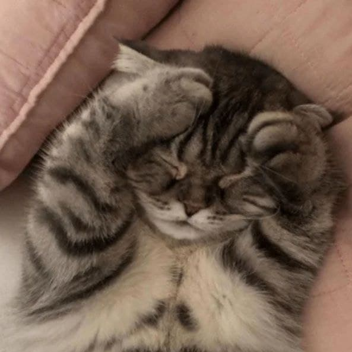
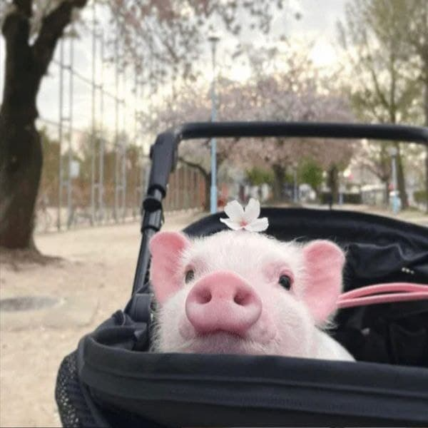

Котик
Майже котик
Котик

Iз подiй мого раннього дитинства, що вплинули (подiї) на моє лiтературне майбутнє, твердо врiзалася в пам'ять одна: упав я дуже з коня. Летiв верхи на полi, а собака з-за могили як вискочить, а кiнь — убiк! А я — лясь! Здорово впав. Лежав, мабуть, з годину, доки очунявся... Тижнiв зо три пiсля того хворiв. I отодi я зрозумiв, що я на щось потрiбний, коли в такий слушний момент не вбився. Неясна ворухнулася в мене тодi думка: мабуть, я для лiтератури потрiбний. Так i вийшло. Отак мiж природою, з одного боку, та людьми — з другого, й промайнули першi кроки мого дитинства золотого. Потiм — оддали мене в школу.
Школа була не проста, а Мiнiстерства народного просвещенiя. Вчив мене хороший учитель Iван Максимович, доброї душi дiдуган, бiлий-бiлий, як бiлi бувають у нас перед зеленими святами хати. Учив вiн сумлiнно, бо сам вiн був ходяча совiсть людська. Умер уже він, хай йому земля пухом. Любив я не тiльки його, а й його лiнiйку, що ходила iнодi по руках наших школярських замурзаних. Ходила, бо така тодi "система" була, i ходила вона завжди, коли було треба, i нiколи люто. Де тепер вона, та лiнiйка, що виробляла менi стиль лiтературний? Вона перша пройшлася по руцi моїй, оцiй самiй, що оце пише автобiографiю. А чи писав би я взагалi, коли б не було Iвана Максимовича, а в Iвана Максимовича та не було лiнiйки, що примушувала в книжку зазирати?
Книга, що найсильнiше на мене враження справила в моїм життi, — це "Катехiзис" Фiларета. До чого ж противна книжка! Ще якби так — прочитав та й кинув, воно б i нiчого, а то — напам'ять. Книжки я любив змалку. Пам'ятаю, як попався менi Соломонiв "Оракул". Цiлими днями сидiв над ним та кульки з хлiба пускав на оте коло з числами рiзними. Пускаю, аж у головi макiтриться, поки прийде мати, вхопить того "Оракула" та по головi — трах! Тодi тiльки й кину. Взагалi любив я книжки з м'якими палiтурками. Їх i рвати легше, i не так боляче вони б'ються, як мати, було, побачить. Не любив "Руського паломника", що його рокiв дванадцять пiдряд читала мати. Велика дуже книжка. Як замахнеться, було, мати, так у мене аж душа у п'ятах. А решта книг читалася нiчого собi.
Писати в газетах я почав 1919 року за пiдписом Павло Гунський. Почав з фейлетону. У 1921 роцi почав працювати в газетi "Вiстi" перекладачем. Перекладав я, перекладав, а потiм думаю собi: "Чого я перекладаю, коли ж можу фейлетони писати! А потiм — письменником можна бути. Он скiльки письменникiв рiзних є, а я ще не письменник. Квалiфiкацiї, — думаю собi, — в мене особливої нема, бухгалтерiї не знаю, що я, — думаю собi, — робитиму". Зробився я Остапом Вишнею та й почав писати. I пишу собi...